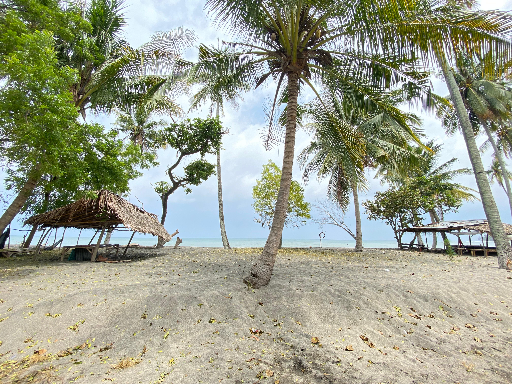

Wisata

Pantai Karang Atas
Pantai Karang Atas atau juga dikenal Pantai Tanjung Atas merupakan pantai yang ada di Desa Sokong. Pantai ini menjadi tempat yang pantas untuk camping, memancing, dan menikmati keindahan sunset di sore hari. Pantai ini dikelola oleh Kelompok Sadar Wisata atau Pokdarwis Kembang Dangar.
Bukit Murjumeneng
Destinasi wisata bukit ini, menawarkan pemandangan daratan sekitar Tanjung hingga memperlihatkan Gili Trawangan, Gili Meno, dan Gili Air. Waktu terbaik untuk mengunjungi bukit Murjumeneng adalah saat sore hari karena menampilkan pemandangan sunset atau matahari terbenam. Disini juga terdapat dua ayunan yang merupakan tempat yang bagus untuk berfoto dengan suasana latar belakang dari atas bukit. Tempat wisata ini berada di pinggir jalan sehingga anda dapat langsung menemukannya.